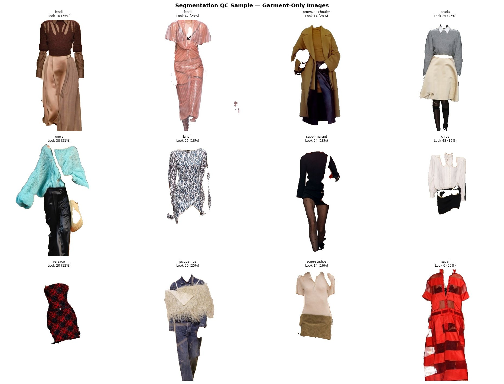

Quantitative methods, runway data, and the question of what we will be wearing next.
I recently completed my master's in Quantitative Methods in the Social Sciences at Columbia University, and my work sits at an intersection that is rare by design: rigorous quantitative analysis on one side, and a hands-on understanding of fashion on the other.
My thesis is a computer-vision and time-series forecasting pipeline trained on a decade of luxury runway imagery. Beyond it, I have analyzed transactional retail data, led a graduate research team, and worked on-set during New York Fashion Week.
Currently exploring roles at fashion-tech companies, brands, and analytics teams that take trend, planning, and assortment seriously as a data problem.
An end-to-end machine learning pipeline in Python: SegFormer-B2 garment segmentation, CIELAB k-means color clustering, zero-shot CLIP classification, and four forecasting models benchmarked across ARIMA, Prophet, LSTM, and Attention-LSTM. Tested against three foundational fashion diffusion theories — with one new finding: aesthetics trickle down while silhouettes trickle across.

Fig. 01 · Garment segmentation across twelve luxury houses
Time-series models on visual and transactional data. Color and silhouette analysis. Detecting what is rising before it is consensus.
Sell-through analysis, demand forecasting, assortment diagnostics, and KPI reporting. The logic that supports open-to-buy and markdown decisions.
From raw data to recommendation, in Python and SQL. Comfortable with Pandas, Scikit-learn, Tableau, Looker, AWS, Databricks, and large unstructured datasets.
Deep learning for image classification, clustering for feature extraction, large language models for evaluation, and the judgment to pick the right tool.
Publication-quality visualizations and analyses that non-technical stakeholders actually use. Findings translated into decisions, not dashboards.
On-set experience at New York Fashion Week and an Inside LVMH certificate. Quantitative rigor with a working knowledge of how the industry runs.
If your team is thinking about trend, planning, analytics, or anything in between, I would love to hear from you.